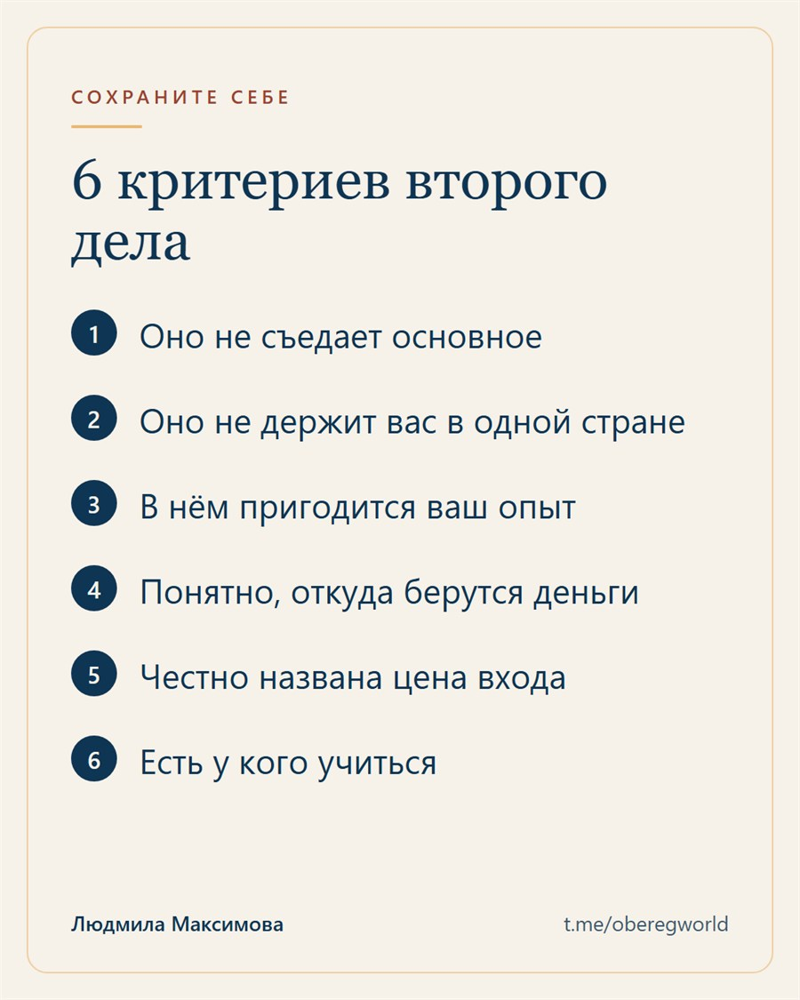

Ещё одно направление
Второе дело рядом со своим: как предпринимателю выбрать новое направление
Мне всегда было тесно в одном направлении. Двадцать лет у меня своё дело в Турции, и рядом с ним всегда жили другие проекты. Недавно к ним прибавилось ещё одно, онлайн. Рассказываю, как я его выбирала и что советую проверить вам.

Коротко
Второе дело не обязано заменять первое. Хорошее второе направление не забирает у основного всё время, не держит вас в одной стране и использует опыт, который у вас уже есть. Выбирать его стоит так же придирчиво, как партнёра в первое дело: с вопросами, с цифрами и без розовых очков.
Почему предприниматели держатся за своё дело
В опросе Russian Business и агентства «Лампа», опубликованном в мае 2026 года, картина такая:
- 54% за последние 12 месяцев увидели снижение выручки;
- 18% среди главных трудностей называют собственное выгорание и усталость;
- 48% не стали бы сегодня запускать своё дело с нуля;
- и при этом только 7% рассматривают продажу или закрытие бизнеса в ближайшие полгода или год.
В марте «Опора России» добавила своё: у 86% опрошенных выросла фискальная нагрузка, а почти каждый пятый всерьёз допускает, что закроет бизнес. Опросы разные, и спрашивали в них по-разному, но тон похож.
Картина узнаваемая: устали, но держатся. Своё дело как ребёнок: отпустить его очень трудно, даже когда тяжело. Я своё агентство растила именно так. А мне в такие времена всегда хотелось, чтобы рядом появилось что-то ещё.
И ещё одна цифра из майского опроса. Главным мотиватором предприниматели чаще всего называют свободу управлять своим временем, так ответили 24%. Мне это очень понятно.
Как я выбирала своё направление
Недвижимость приучила меня считать, договариваться и с подозрением смотреть на красивые картинки. Особенно на те, где море.
Поэтому новое направление я проверяла, как объект для самого придирчивого клиента: с вопросами, с документами и без розовых очков. У меня было два условия: дело не должно держать меня в одной стране, и в нём должен пригодиться мой опыт. Из них и выросли критерии, которыми делюсь.
6 критериев второго дела
- Оно не съедает основное. Посчитайте честно, сколько часов в неделю вы готовы отдавать новому, не отнимая их у своего дела и семьи. Если новое требует «всего вас» с первого месяца, это уже смена профессии, и второе дело тут ни при чём.
- Оно не держит вас в одной стране. Для меня это было одним из двух главных условий. Если встречи, обучение и переговоры проходят онлайн, работать можно из офиса, из дома или из аэропорта.
- В нём пригодится ваш опыт. Годы своего дела научили вас говорить с людьми, держать слово и считать риски. Хорошо, когда новое направление опирается на это и вам не приходится начинать с чистого листа.
- Понятно, откуда берутся деньги. Если вам не могут простыми словами объяснить, из чего складывается доход, дальше можно не слушать. Для сетевого бизнеса я подробно разобрала это в статье «Сетевой бизнес или пирамида: как проверить, прежде чем верить».
- Честно названа цена входа. Сколько нужно заплатить на старте и есть ли обязательные платежи потом. Если сумму не называют до решения, это плохой знак.
- Есть у кого учиться. У нового направления всегда новые правила. Мне важно, что рядом есть наставники и люди, с которыми можно разобрать ошибки. Одной красивой презентации мало.

3 вопроса до любого решения
Критерии помогают отсеять лишнее. А перед самим решением задайте себе ещё три вопроса.
- Что именно я буду делать каждую неделю? Конкретно: звонки, встречи, обучение. Слово «развиваться» не считается.
- Что будет, если через полгода я пойму, что это не моё? Хорошо, когда у ответа нет мелкого шрифта.
- Могу ли я до решения поговорить с теми, кто уже в деле? Живой разговор расскажет больше, чем презентация.
Если на все три вопроса вы получили спокойные и понятные ответы без «потом разберётесь», это уже неплохой знак.
Мечта вдохновляет. Цель работает. А проверка бережёт нервы.
Что выбрала я
Я выбрала партнёрский бизнес в wellness. Да, это сетевой бизнес, и я говорю об этом сразу. Здесь онлайн-встречи, готовая основа международной компании и наставники. А в центре стоят приборы для дома и здорового образа жизни.
Это не значит, что вам подойдёт то же самое. Мой путь просто пример того, как можно выбирать. Я сама недавно в этом деле и показываю свои шаги, а идти ли рядом, решаете вы.
Если вы недавно переехали в другую страну, вам может пригодиться ещё одна моя статья: что проверить, если хочется дела без привязки к стране.
Хотите посмотреть, как это устроено у меня?
Напишите мне в Telegram или WhatsApp. Можно одной фразой: «Хочу познакомиться». Я отвечу сама и приглашу на онлайн-встречу на 30–40 минут: расскажу о себе, о компании и об условиях, а вы спокойно решите. А если пока хочется просто присмотреться, загляните в мой Telegram-канал: там я показываю, как живу у моря и строю второе дело.
Источники
- Retail.ru. 54% предпринимателей столкнулись с падением выручки. Исследование Russian Business и агентства «Лампа», 26.05.2026.
- RB.RU. Каждый второй предприниматель не открыл бы бизнес в 2026 году, но закрыть существующую компанию готовы только 7%. 26.05.2026.
- Retail.ru. Почти каждый пятый малый предприниматель допустил закрытие бизнеса из-за налоговых изменений. Опрос «Опоры России», 24.03.2026.